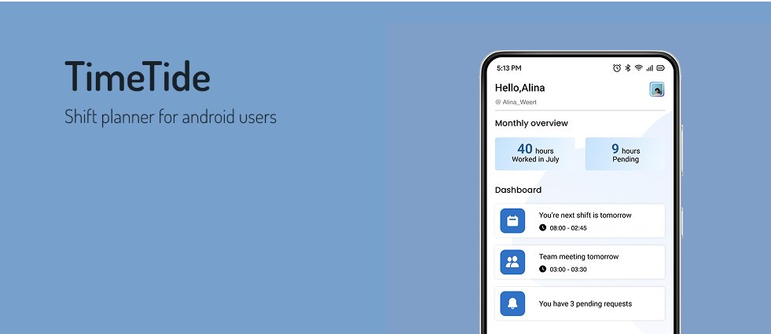
Android · Solo · 5 weeks
C&A TimeTide
A shift planner for C&A Netherlands staff. My survey of 21 employees found that 70% struggled to follow the manual schedule, so I designed remote access to shifts, reminders and holiday requests.
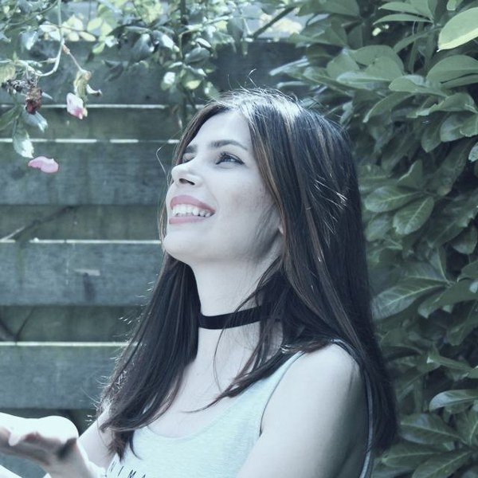
For the past two years I have been the sole UI/UX designer at Taaghche, an online bookshop and reading app. I take features from the product brief to shipped screens on Android, iOS and web, working with product, engineering and marketing. Before that I spent six years in architecture, interior and visual design. I still draw every day.
Open to UI/UX designer roles·Maastricht, NL·Dutch citizen, no visa sponsorship needed
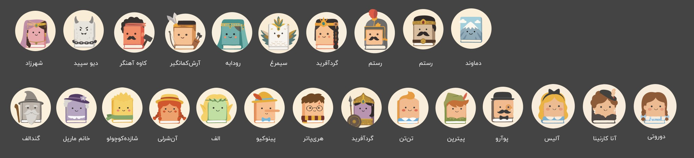
Taaghche's interface is in Persian and reads right to left. I kept the original designs unchanged and added English captions to explain each screen.


An LLM chat inside the e-book reader, designed around token cost, trust and content policy.


A subscription checkout with discounts, wallet credit, bank payment and buy-now-pay-later installments.
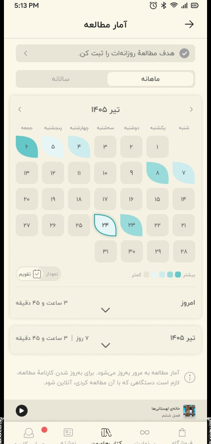
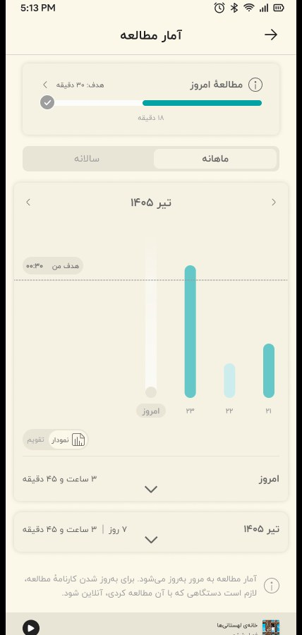
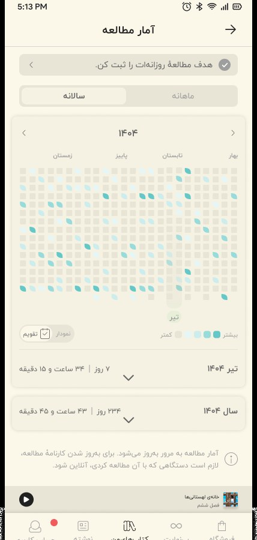
A personal dashboard with a calendar heatmap, charts and daily goals.
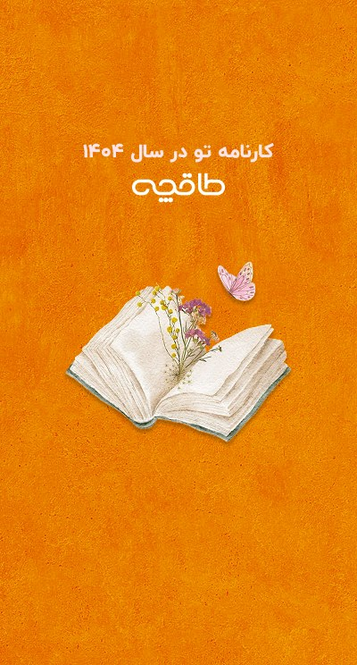
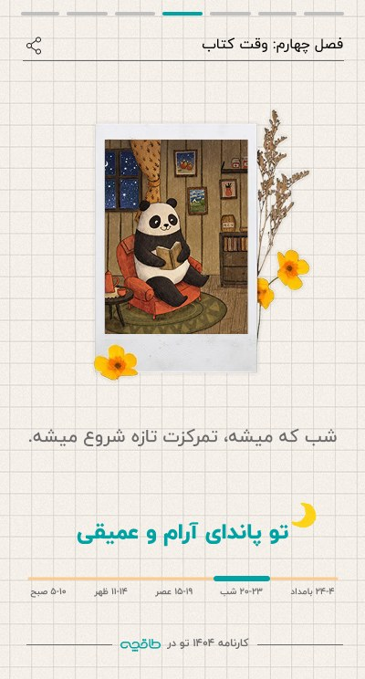
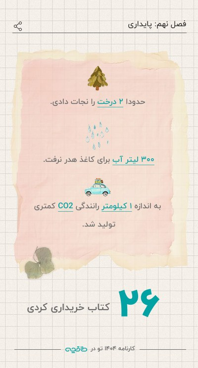
A story-style recap of each reader's year, ranked against their peers.
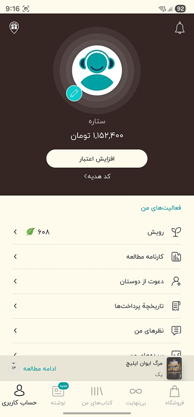
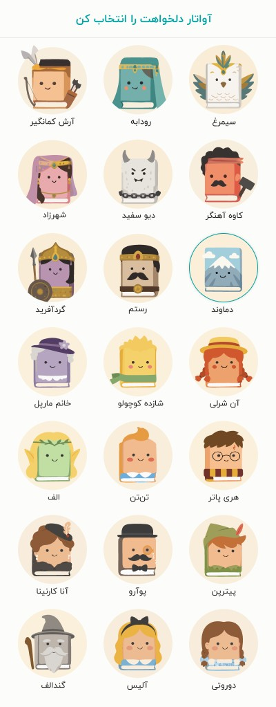
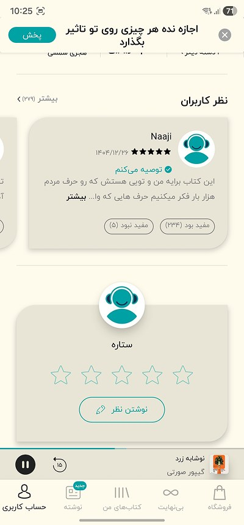
Book-shaped characters that replaced the generic profile placeholders, validated with a user survey.
As Taaghche's only designer, I am the link between product, engineering and marketing. Hand-off is a core part of the job, and I have learned that a good hand-off fits the person receiving it.
I ran design and stakeholder meetings to turn requests into a clear problem, agreed scope, and decisions everyone could see.
I checked data and technical limits with backend and front-end developers before polishing, so designs stayed buildable.
Some developers wanted every detail and a walkthrough meeting. Others worked straight from a well-organized Figma file. I adjusted the format for each.
I reviewed builds against the designs, logged precise fixes, and covered empty, error, loading and edge states.
Two years of shipping have taught me that the hand-off is part of the design, not a step after it.
End-to-end projects with user interviews, surveys, flows, wireframes, usability tests and high-fidelity prototypes. View the full case studies in Figma ↗

A shift planner for C&A Netherlands staff. My survey of 21 employees found that 70% struggled to follow the manual schedule, so I designed remote access to shifts, reminders and holiday requests.
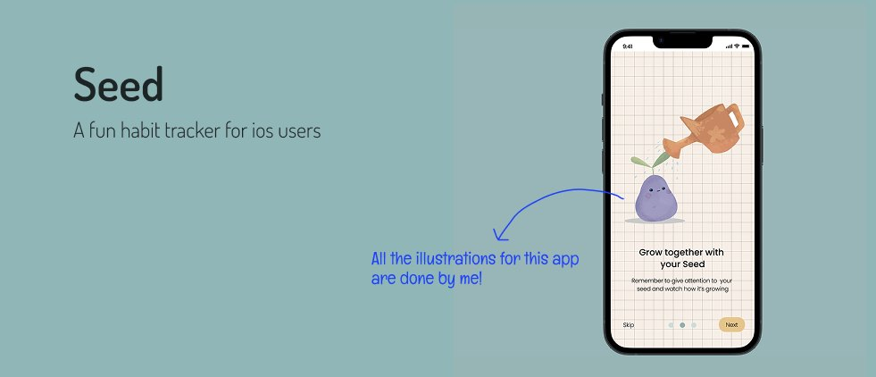
A friendly habit tracker where your habits grow a little seed character. I drew all the illustrations, set up the branding, and built a landing page and revenue plan.
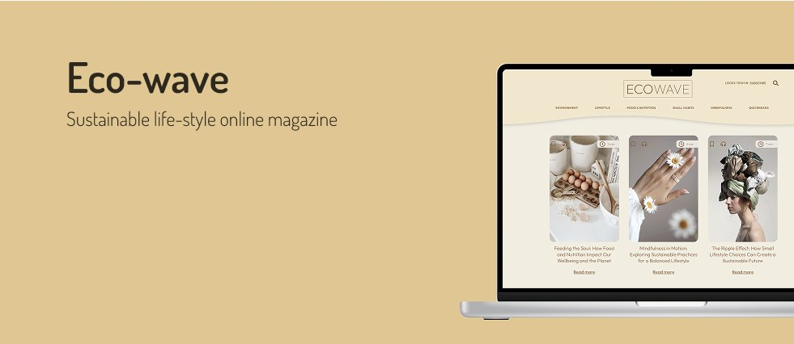
A sustainability magazine with a personal dashboard to set reading goals, and to save, listen to and share articles. Includes a component library and basic HTML and CSS.
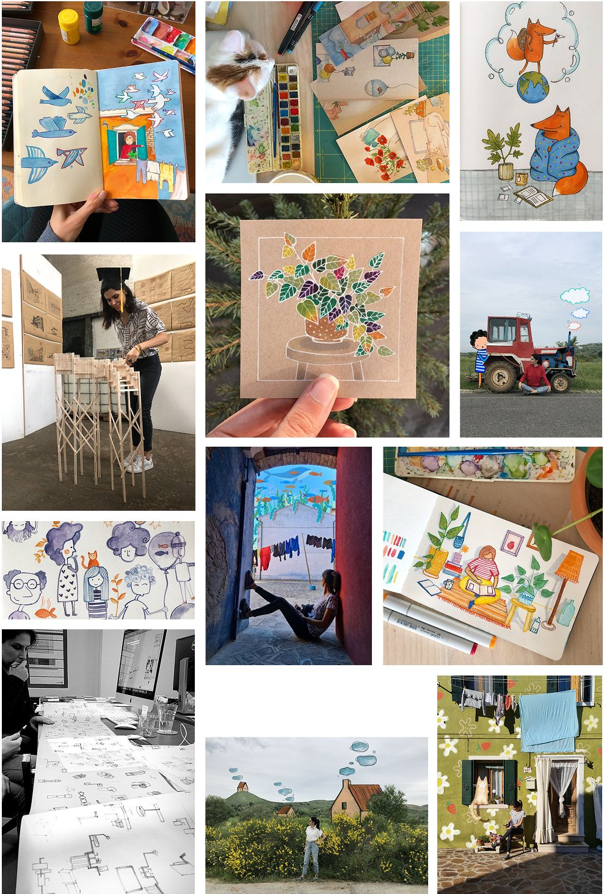
On paper and digitally, I fill sketchbooks with characters, colors and small stories. That habit is why I could illustrate Taaghche's avatars myself instead of briefing an agency.
My architecture background shows up too: physical models, plans and a feel for structure and space. Those habits carry over to layout, hierarchy and systems thinking in UI.
I studied urban design at Saxion and earned my Master of Architecture at Zuyd University in Maastricht. After years of designing buildings, interiors, websites and illustrations, I moved into digital product design with Ironhack’s UX/UI bootcamp in 2023. At Taaghche I became the only designer for a product with more than two million active users, and I learned to own the whole design process and to work with every team that touches a feature.
I care about interfaces that feel friendly and clear, about designs developers enjoy building, and about bringing some illustration and warmth into everyday products.